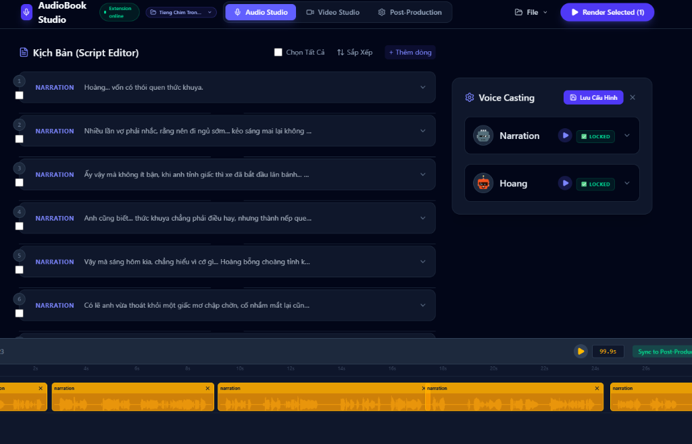
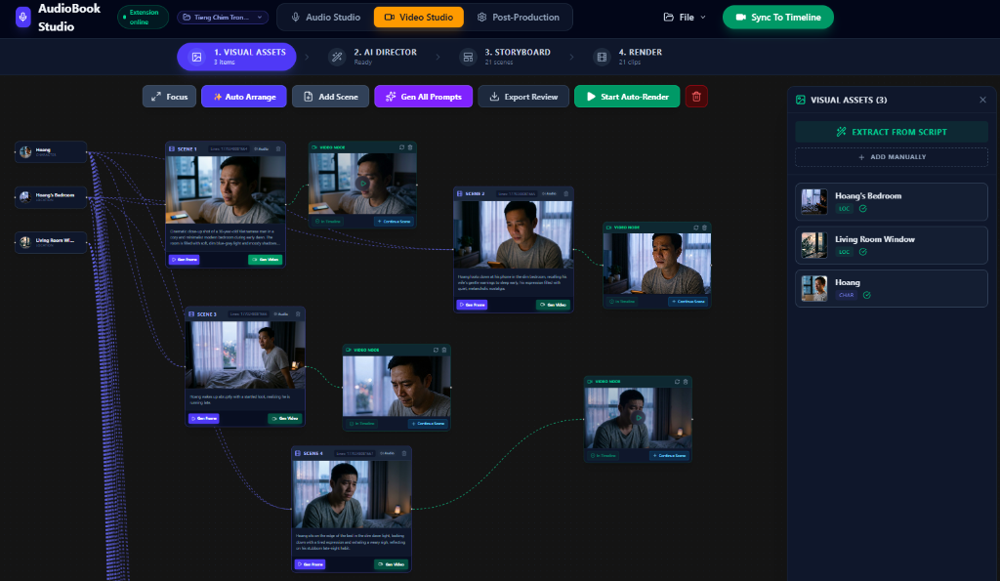
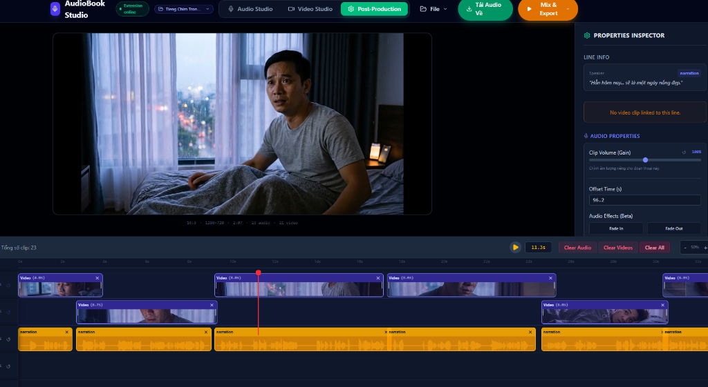

Human-in-the-Loop AI
Transform Scripts into Masterpieces.
The ultimate monolithic studio for generating audiobooks, visual novels, and AI-directed cinematic videos. Experience the power of complete creative control.
The ultimate monolithic studio for generating audiobooks, visual novels, and AI-directed cinematic videos. Experience the power of complete creative control.
The hub for scripting, voice casting, and rendering lifelike audio.

Your AI Director's chair. Create visual assets, construct scene graphs, and generate stunning visuals via FlowKit/Veo.

The final stage. Mix multi-track audio and video timelines like a professional DAW, then export the final product.
